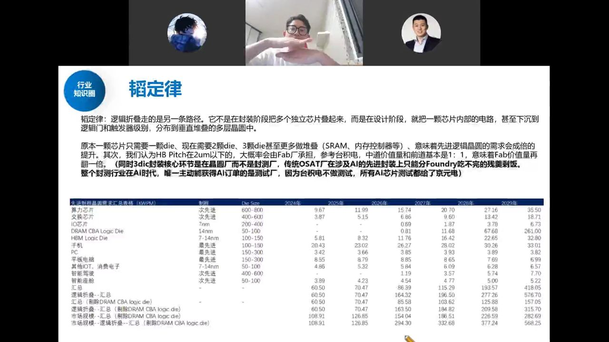
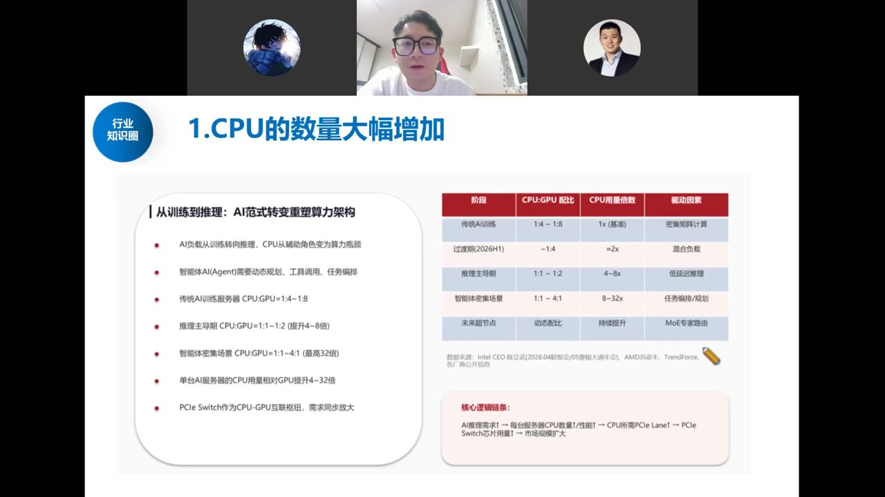
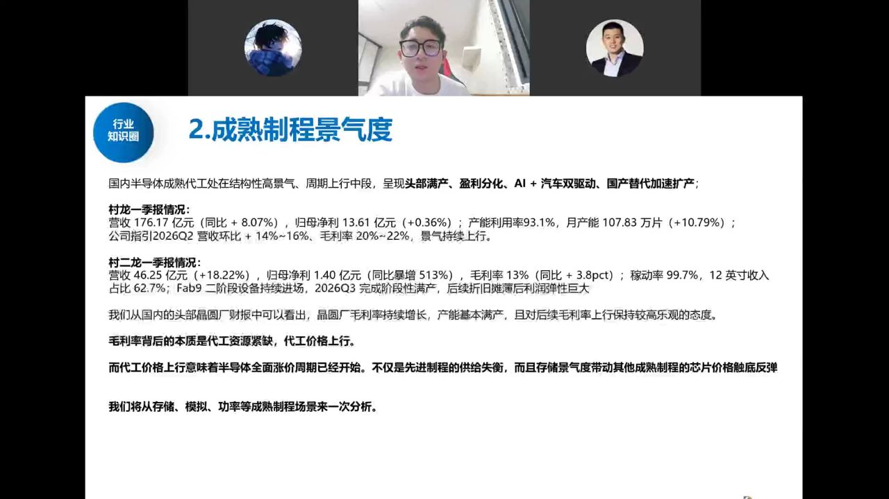
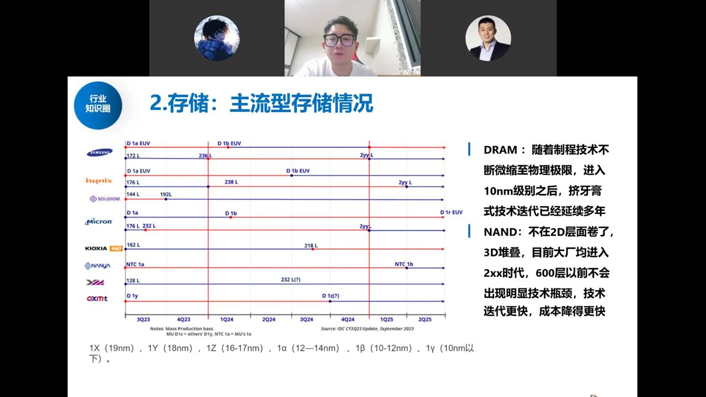

本期两条主线：一是华为"韬定律"（逻辑折叠）如何用 3D 堆叠绕开没有 EUV 的瓶颈、直接利好晶圆厂； 二是成熟制程涨价潮全面开启。同时梳理了国产算力新变化（CPU 数量爆发、PCIe Switch）、 长鑫长存扩产链，以及模拟、功率、分销等成熟制程环节的量价机会。
韬定律（逻辑折叠）走的是与传统封装不同的路径：不是在封装阶段把多个独立芯片叠起来，而是在设计阶段就把一颗芯片内部的电路，下沉到逻辑门和触发器级别，垂直堆叠到多层晶圆中。原本一颗芯片只需一颗 die，现在需要 2–3 颗甚至更多（SRAM、内存控制器等），意味着先进逻辑晶圆的需求成倍提升。

谁最受益（市场误区澄清）：最直接利好的是晶圆厂（Fab），而不是封测厂。HP Pitch 在 2μm 以下大概率由 Fab 厂承担，参考台积电 Corvus/CoWoS 模式——先进封装在设计阶段就由晶圆厂完成，传统 OSAT（日月光等）只能吃到 Foundry 做不完的残羹剩饭。AI 时代唯一主动拿到 AI 订单的封测环节是测试厂（台积电不做测试，所有 AI 芯片测试都给了京元电）。
测算显示：加上逻辑折叠后，远期（2026–2027 年起）晶圆需求市场空间成倍增加（外协制程晶圆需求从 2024 年约 109 万片/月增至 2029 年约 568 万片/月）。这直接打破了国内"没有 EUV 就做不了先进制程 AI 芯片"的瓶颈，拉动晶圆厂新制程扩产，以及混合键合设备、检测测试设备等新型增量。
AI 负载从训练转向推理，CPU 从"发号施令的指挥家"变成"反复与 GPU 沟通的保姆"（任务拆解、分步反馈、调试修改）。智能体（Agent）需要动态规划、工具调用、任务编排，过去 CPU 里 64 个核有 70% 闲着，未来每个核都要高速运转。

需求佐证：字节今年 AI 资本开支上调到 700 亿美元、明年上修到 1000 亿美元，未来三年合计 2.1 万亿人民币以上（半年前还以为只有 1 万亿出头）。CPU、内存接口芯片、Switch 芯片等配套器件需求同步"加个零"。
国内成熟代工处于结构性高景气、周期上行中段：头部满产、AI+汽车双驱动、国产替代加速扩产，海外芯片厂"China for China"（卖给中国的货必须在中国制造）纷纷找国内晶圆厂代工。

毛利率上行的本质是代工资源紧缺、代工价格上涨。下游只要沾 AI/服务器需求，"有没有价格不重要，有货就行"，成本顺畅传导。研究员判断：代工价格上行意味着半导体全面涨价周期已经开始——不仅先进制程供给失衡，存储景气还会带动成熟制程芯片价格触底反弹，像多米诺骨牌逐轮推动。成熟制程的核心就看价格（国产化率已高，利润靠涨价释放）。
主流存储分两类：DRAM（断电丢失数据，与 GPU/CPU 交换数据，代表是 HBM，国内长鑫）和 NAND Flash（持久存海量数据，国内长江存储）。两者都不吃先进制程、不依赖 EUV，光刻机无法卡脖子，扩产没有技术阻挠，因此背负国家级扩产重任。

重点：长鑫长存上市后不是"炒一波就结束"——它们募资有限，后续要靠定增从二级市场借钱扩产，每一笔定增都是数百亿上千亿。必须重视两长的扩产链：长鑫（合肥）产业链已较透明，长存（武汉）配套仍有大量想象空间。存储周期短期 1–3 年内看不到结束——只要价格敢跌就有人敢囤货补库。
国内厂商提价、英飞凌等跟进，主流产品涨 10%–25%，中低压 MOS 已涨 20%–30%。原因：库存降到低位、8 寸产能收缩、闻泰被 ST 留下汽车功率缺口、存储厂把功率产能转产；需求侧 AI 服务器（中低压 MOS）、储能爆量。服务器供电电压从 415V 升到 800V 以降低电流损耗，终局 SST（智能固态变压器）直接把 13.8kV 降到 GPU 侧 1V，带动碳化硅需求（2030 年约 2000 万片、约 160 亿利润增量、支撑约 2000 亿市值增量）。
海外分销股竖涨（如艾睿电子上一轮模拟周期净利率从 1% 干到 4%）。分销逻辑是"傍原厂规模"而非囤货涨价：长鑫长存、村田（MLCC）等原厂收入扩大，分销商业绩同步放大；位置和估值都便宜，是景气度β的低估值配置。
被问到"哪个细分已经跑到头/证伪"，研究员的回答是：没有任何一个细分跑到头，也没有出现证伪逻辑。
一句话总结：韬定律解决"做不出先进制程"的问题，成熟制程涨价解决"赚不到钱"的问题；AI 远未走完，半导体各细分脉冲式轮动，但拉长线都向上。